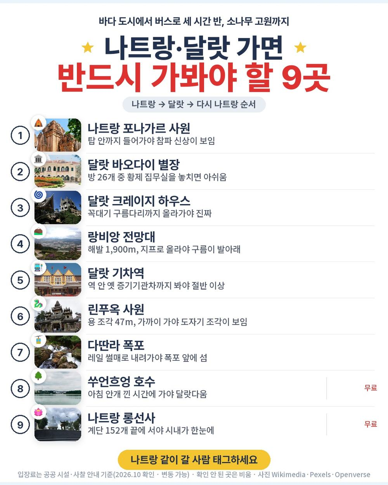
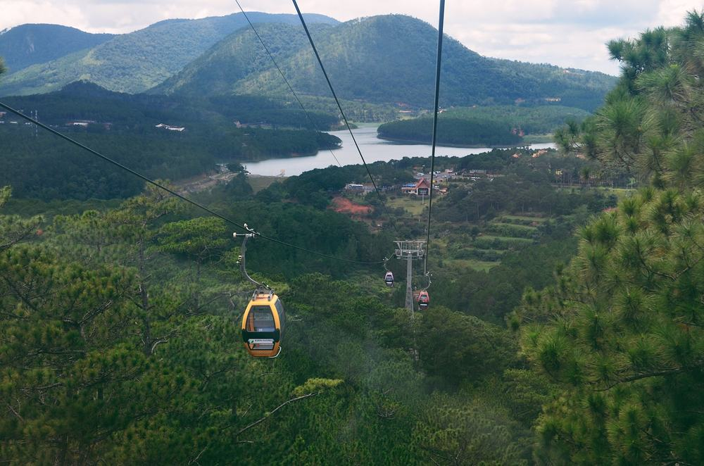
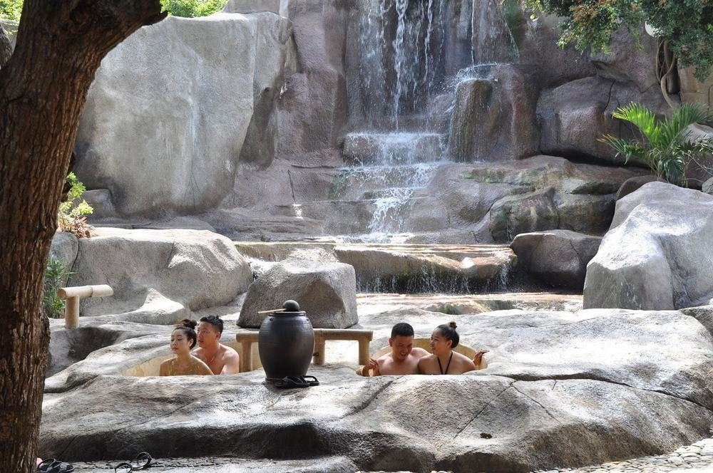
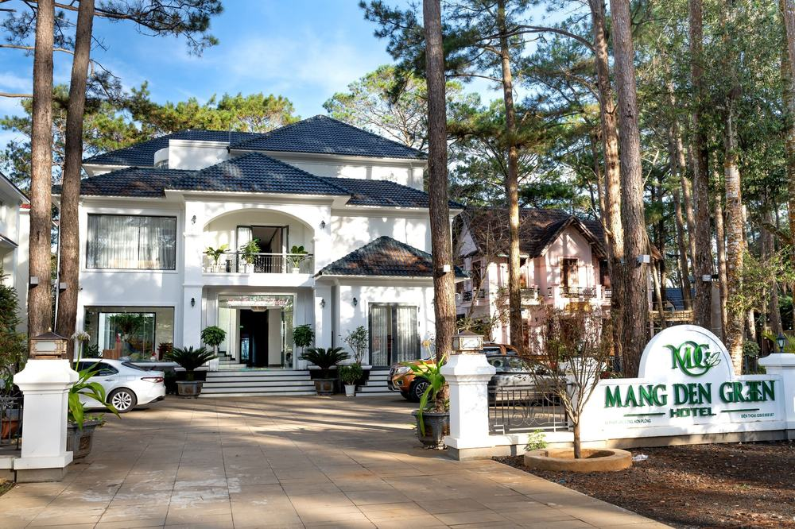
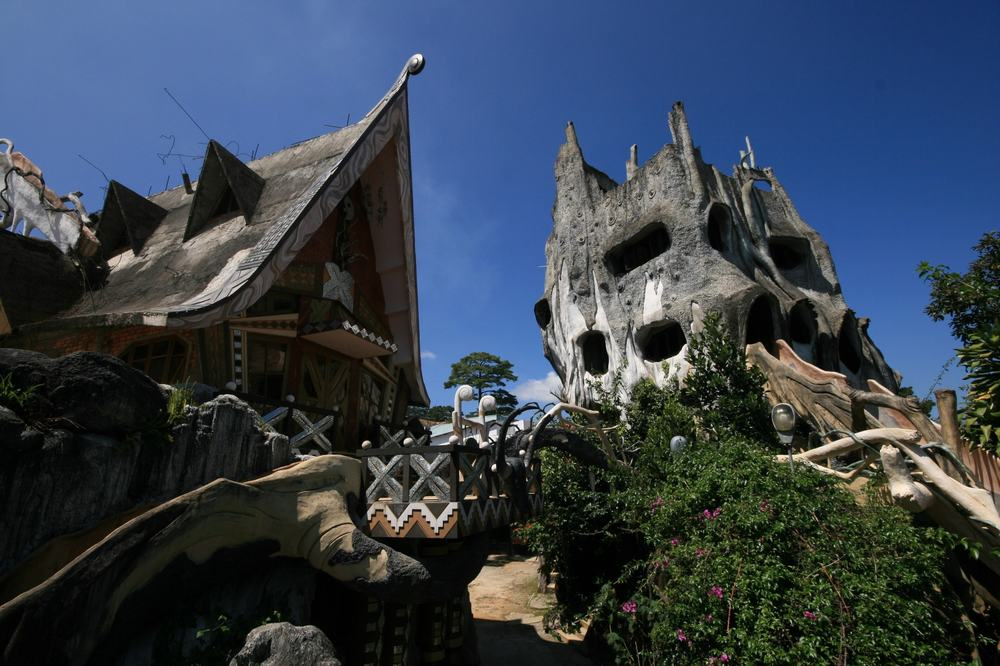
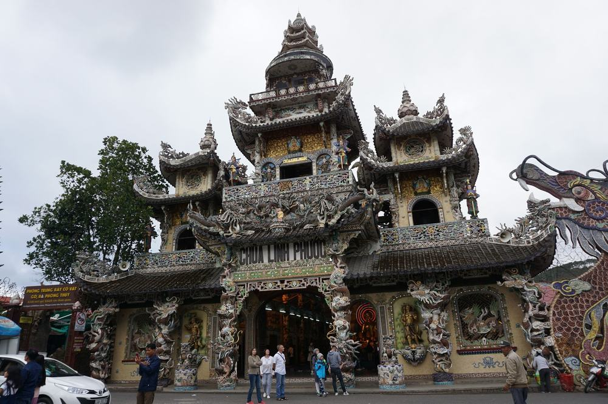

참좋은여행 나트랑 달랏 패키지 여행 52만 9천원, 추가금 진짜 없을까?

부산에서 부모님 모시고 가까운 동남아를 찾다 보니 나트랑이 계속 걸렸음. 그런데 나트랑만 도는 상품은 바다 말고 볼 게 적고, 달랏까지 가는 상품은 선택관광이 줄줄이 붙는 경우가 많음.
그러다 참좋은여행 상품이 걸림. 원문에 "케이블카, 레일바이크, 나트랑 야간 시티투어 사전 포함"이 따로 적혀 있음. 가이드 경비 50달러도 이미 들어 있고, 마사지가 두 번, 머드 온천까지 있음.
결론 — 추천. 김해 직항에 나트랑 바다와 달랏 고원을 3박 5일에 다 돌고, 팁·선택관광 걱정이 없음. 다만 버스 3시간 30분 이동이 두 번 있는 게 힘든 분, 쇼핑 3회가 싫은 분, 새벽 도착 밤 비행기가 부담인 분은 아님.
52만 9천원이 그만한 값인지, 현지에서 더 내는 돈은 얼마인지 원문을 뜯어봤음.
| 항목 | 내용 |
|---|---|
| 가격 | 1인 529,000원 (2인 1실 기준 · 10월 말 출발) |
| 여행사 | 참좋은여행 (부산지점) |
| 항공 | 에어부산 직항 · 김해 저녁 출발 → 캄란 밤 도착 / 귀국은 자정 무렵 출발 → 김해 아침 도착 |
| 숙소 | 5성급 예정 3박 · 나트랑 1박 + 달랏 2박 |
| 일정 | 3박 5일 · 전용 버스 · 한국어 가이드 · 식사 9회 · 노팁 · 노옵션 |
| 가는 곳 | 포나가르 · 머드 온천 · 바오다이 별장 · 랑비앙 · 린푸옥 · 다딴라 · 롱선사 |
▶ 내 출발일 오늘 기준 요금 확인 (제휴 링크 · 예약 시 수수료를 받으며 가격은 같습니다)
| 순서 | 다루는 것 | 한 줄 결론 |
|---|---|---|
| 1 | 구성 뜯어보기 | 노팁·노옵션, 현지 추가금은 마사지 팁 12달러 |
| 2 | 일정 살펴보기 | 2일차·4일차가 버스 3시간 30분씩이라 고됨 |
| 3 | 자유여행 VS 패키지 | 직접 짜면 92만원 | 패키지가 팁 더해도 37만원쯤 덜 듦 |
1. 구성 뜯어보기
요약 — 항공·5성급 예정 3박·식사 9회·관광지 입장·가이드 경비·케이블카·레일바이크·시티투어·마사지 2회·머드 온천·보험이 다 들어 있음. 현지에서 더 내는 건 마사지 매너팁뿐이고, 쇼핑은 3회.
1-1. 52만 9천원에 들어 있는 것

포함 항목을 원문에서 그대로 옮기면 이럼.
- 왕복 항공권 + 유류할증료 + 세금
- 5성급 예정 호텔 3박 (2인 1실)
- 식사 9회
- 관광지 입장료
- 기사·가이드 경비 1인 50달러 (사전 포함)
- 케이블카 · 레일바이크 · 나트랑 야간 시티투어 (사전 포함)
- 베트남 전통 마사지 2회 (120분 · 90분) · 머드 온천
- 과일 도시락 · 유심 (객실당 1개)
- 여행자보험
이 상품의 차별점은 현지에서 따로 고를 게 없다는 것임. 케이블카·레일바이크가 각각 1인 30달러 상당인데, 둘 다 미리 들어 있음.
출발일별 요금 확인하기
https://naver.me/Ix0qFx3D
1-2. 마사지 두 번, 머드 온천 한 번

2일차 아침 첫 일정이 머드 온천임. 진흙탕에 몸을 담갔다가 온천 수영장에서 씻어 내는 코스. 수영복과 세면도구만 챙기면 되고, 티셔츠·반바지는 무료로 빌려줌.
마사지는 달랏 120분 + 나트랑 90분. 버스 3시간 30분을 탄 날마다 하나씩 들어 있음. 매너팁만 별도(1인 7달러 + 5달러).
1-3. 호텔과 쇼핑

호텔은 5성급 예정, 첫 밤은 나트랑 시내(호라이즌·리갈리아 골드 등), 나머지 두 밤은 달랏(스위스벨·멀펄 등)임. 스위스벨은 투옌럼 호수 옆 골프장 리조트. 4일차는 호텔 없이 마사지 받고 바로 공항으로 감.
쇼핑은 3회 — 침향, 커피, 잡화 또는 라텍스. 각 1시간쯤이고 사는 건 자유.
1-4. 현장에서 더 낼 돈
| 항목 | 금액 | 비고 |
|---|---|---|
| 기사·가이드 경비 | 0원 | 1인 50달러 상품가에 포함 |
| 선택관광 | 0원 | 케이블카·레일바이크·시티투어 포함 |
| 마사지 매너팁 | 약 34,000원 | 1인 12달러(7달러+5달러) × 2 |
| 싱글룸 쓰면 | 150,000원 | 1인 여행 시 |
| 합계 (2인) | 약 34,000원 | 상품가 105만 8천원 + 3만 4천원 = 약 109만원 |
한 사람으로 치면 약 55만원임. 환율은 1달러 약 1,400원으로 잡았음.
1절 자주 나오는 질문
Q. 선택관광을 현지에서 권하나요?
A. 원문에 케이블카·레일바이크·야간 시티투어가 "사전 포함"으로 적혀 있는 노옵션 상품임.
Q. 가이드 경비는 따로 내나요?
A. 안 냄. 기사·가이드 경비 1인 50달러가 상품가에 이미 들어 있음. 마사지 매너팁과 개인경비만 별도.
Q. 출발이 확정된 상품인가요?
A. 원문 출발 상태는 확정이 아님. 성인 4명 이상이 모여야 출발하고, 최종 여부는 일주일 전까지 알려준다고 적혀 있음.
2. 일정 살펴보기
요약 — 1일차 저녁 비행기, 2일차 머드 온천·포나가르 뒤 달랏, 3일차 달랏 하루, 4일차 쑤언흐엉 호수 뒤 나트랑·시티투어·밤 비행기, 5일차 아침 김해 도착. 2일차와 4일차에 버스 3시간 30분씩.
2-1. 하루하루 어디를 가나

| 일차 | 가는 곳 | 식사 | 숙소 |
|---|---|---|---|
| DAY 1 | 김해 19:30 출발 → 캄란 22:40 도착 | — | 나트랑 |
| DAY 2 | 머드 온천 → 포나가르 사원 → 달랏 이동 → 바오다이 별장 · 크레이지 하우스 · 천국의 계단 → 마사지 120분 | 조 호텔식 · 중 현지식 · 석 현지식 | 달랏 |
| DAY 3 | 랑비앙 전망대(지프) → 도멘 드 마리 성당 → 달랏 기차역 → 린푸옥 사원 → 죽림사원(케이블카) → 다딴라 폭포(레일바이크) → 야시장 | 조 호텔식 · 중 현지식 · 석 한식 | 달랏 |
| DAY 4 | 쑤언흐엉 호수 → 나트랑 이동 → 쇼핑 → 롱선사 → 대성당(차창) → 야간 시티투어 → 마사지 90분 → 공항 | 조 호텔식 · 중 현지식 · 석 한식 | 기내 |
| DAY 5 | 김해 06:20 도착 | — | — |
| 일차 | 버스 이동 | 걷기 | 포함 식사 |
|---|---|---|---|
| DAY 1 | 약 0.7시간 | 적음 | 포함 끼니 없음 |
| DAY 2 | 약 4.5시간 | 보통 | 조 호텔식 · 중 현지식 · 석 현지식 |
| DAY 3 | 약 2시간 | 중상 | 조 호텔식 · 중 현지식 · 석 한식 |
| DAY 4 | 약 4.5시간 | 보통 | 조 호텔식 · 중 현지식 · 석 한식 |
| DAY 5 | 거의 없음 | 적음 | 포함 끼니 없음 |
| 합계 | 약 11.7시간 | - | 9끼 (현지식 4 · 호텔식 3 · 한식 2) |
요약 — 버스 이동은 5일 동안 약 11.7시간, 포함 식사는 9끼(현지식 4 · 호텔식 3 · 한식 2)임. 볼거리가 가장 많아 제일 많이 걷는 날은 DAY 3임.
2-2. 2일차 — 바다에서 고원으로

아침은 머드 온천, 그다음 7세기부터 12세기 말까지 쌓은 참파 유적 포나가르 사원. 점심 먹고 버스로 약 3시간 30분 올라가면 해발 1,500m쯤의 고원 도시 달랏임. 베트남 마지막 황제의 여름 별장 바오다이 별장(방 26개), 동화 같은 크레이지 하우스를 보고 저녁엔 마사지 120분.
2-3. 3일차 — 달랏 하루

볼거리가 가장 많은 날임. 해발 1,900m 랑비앙 전망대는 지프로 오르고, 핑크빛 도멘 드 마리 성당, 달랏 기차역, 모자이크 사원 린푸옥을 봄. 오후엔 케이블카로 죽림사원, 레일바이크로 다딴라 폭포. 밤엔 달랏 야시장에서 반짱느엉(숯불 라이스페이퍼 피자).
2-4. 4일차 — 다시 나트랑, 그리고 밤 비행기

아침에 둘레 6km 쑤언흐엉 호수를 보고 나트랑으로 내려옴. 롱선사는 돌계단 152개를 올라가야 백불상이 나오고, 거기서 나트랑 시내가 내려다보임. 저녁엔 씨클로·해변 바·맥주·피자가 든 야간 시티투어, 마사지 90분 뒤 공항.
롱선사는 민소매·짧은 바지로 못 들어감. 발목까지 오는 바지나 치마가 필요하고, 근처에서 빌려주지 않음.
2절 자주 나오는 질문
Q. 많이 걷나요?
A. 대부분 보통 수준임. 랑비앙은 지프로 오르고, 롱선사 돌계단 152개와 크레이지 하우스의 좁은 계단이 걷는 구간임.
Q. 비행기는 몇 시인가요?
A. 에어부산 직항이고, 김해 19:30 출발 → 캄란 22:40 도착, 귀국은 자정 무렵 출발 → 김해 06:20 도착임(원문 기준).
Q. 10월 말 날씨는 어떤가요?
A. 나트랑은 10~12월이 우기라 비가 잦음. 달랏은 해발 약 1,500m 고원이라 아침저녁이 서늘해서 얇은 겉옷이 필요함.
3. 자유여행 VS 패키지 | 직접 짜면 92만원
요약 — 같은 일정을 직접 짜면 1인 92만원쯤 듦. 패키지는 마사지 팁을 더해도 약 55만원이라 37만원쯤 덜 들고, 나트랑↔달랏 차량과 투어 예약까지 맡기는 셈임.
3-1. 같은 일정을 직접 짜면

같은 일정을 혼자 짠다고 치고 항목별로 계산해 봄. 10월 말 출발, 2인 1실 1인분임. 항공 말고는 추정치라 근거 열에 적어 둠.
| 항목 | 금액 | 근거 |
|---|---|---|
| 김해–캄란 왕복 항공 | 241,000원 | 패키지와 같은 출발일 직항 (2026-10-05 마이리얼트립 조회) |
| 5성급 호텔 3박 | 150,000원 | 2인 1실 1박 약 10만원의 1인분 × 3 (추정) |
| 식사 9회 | 100,000원 | 현지식 4·한식 2·호텔 조식 3 (추정) |
| 나트랑 ↔ 달랏 차량 왕복 | 120,000원 | 전용 차량 편도 3시간 30분, 2인 나눔 (추정) |
| 공항 ↔ 시내 이동 | 30,000원 | 캄란 공항 왕복 (추정) |
| 케이블카 · 레일바이크 | 84,000원 | 상품 원문 각 30달러 상당 |
| 랑비앙 지프 · 입장료 | 40,000원 | 전망대·사원·별장 (추정) |
| 머드 온천 | 30,000원 | 1회 (추정) |
| 마사지 2회 | 70,000원 | 120분 + 90분 (추정) |
| 야간 시티투어 | 30,000원 | 씨클로·맥주·피자 (추정) |
| 여행자보험 · 유심 | 25,000원 | 5일 기준 |
| 가이드 | — | 자유여행은 없음 |
| 합계 | 약 920,000원 |
직접 짜실 분은 이 날짜 항공권부터 보세요 — https://myrealt.rip/u6Se54 (마이리얼트립 제휴 링크)
패키지는 529,000원에 마사지 매너팁 12달러(약 1만 7천원)를 더해 약 55만원임.
3-2. 그래서 뭐가 다른가
항공·호텔만 보면 자유여행이 싸 보이는데, 나트랑↔달랏 이동부터 뒤집힘. 편도 3시간 30분 산길이라 차량을 따로 잡아야 함.
- 나트랑 → 달랏 → 나트랑, 왕복 7시간 차량
- 케이블카·레일바이크·머드 온천·마사지 두 번을 각각 따로 예약
- 랑비앙은 지프를 현지에서 잡아야 함
패키지는 이 전부가 전용 버스 한 대로 붙고, 한국어 가이드가 붙음. 자유여행 계산표에 가이드 행이 비어 있는 게 그 뜻임 — 0원이 아니라 살 수 없는 것임.
3-3. 어느 쪽이 맞나
| 자유여행이 맞음 | 패키지가 맞음 |
|---|---|
| 나트랑 바다에서만 쉴 것임 | 달랏 고원까지 한 번에 볼 것임 |
| 현지 차량·투어 예약이 편함 | 이동·예약을 맡기고 싶음 |
| 일정 중간 쉬는 날이 필요함 | 3박 5일을 꽉 채워 쓰고 싶음 |
| 쇼핑 일정이 싫음 | 쇼핑 3회는 괜찮음 |
3절 자주 나오는 질문
Q. 자유여행이 더 싸지 않나요?
A. 계산해 보면 자유여행이 약 92만원, 패키지가 팁 포함 약 55만원임. 항공만 24만원이 넘고 달랏 왕복 차량이 커서 이번엔 패키지가 덜 듦.
Q. 혼자 가도 되나요?
A. 됨. 다만 싱글룸 사용료 15만원이 붙음.
Q. 비자가 필요한가요?
A. 원문 기준 불필요임. 여권 유효기간은 6개월 이상 남아 있어야 함.
마무리
정리하면 이럼.
추천함. 52만 9천원에 에어부산 김해 직항, 5성급 예정 호텔 3박, 식사 9회, 머드 온천, 랑비앙, 케이블카·레일바이크, 야간 시티투어, 마사지 2회가 들어 있음. 가이드 경비도 이미 냈고, 현지에서 더 내는 건 마사지 매너팁 정도임.
이런 분은 고르면 안 됨. 버스 3시간 30분 이동이 두 번 있는 게 힘든 분, 쇼핑 3회가 싫은 분, 새벽 도착 밤 비행기가 부담인 분.
걸리는 점이 있긴 한데 상품 흠이라기보다 맞는 사람과 안 맞는 사람을 가르는 조건에 가까움.
오늘 기준 출발일별 요금 보기
https://naver.me/Ix0qFx3D
함께 보면 좋은 글
노랑풍선 시드니 패키지 여행 239만 9천원, 오페라하우스 안까지 될까?
https://blog.naver.com/robotnady10/224430833681
참좋은여행 오사카 패키지 여행 114만 9천원, 추가금 진짜 없을까?
https://blog.naver.com/robotnady10/224430046259
이 글에는 네이버·마이리얼트립 제휴 링크가 포함되어 있으며, 링크를 통해 예약하시면 일정 수수료를 받습니다. 가격은 동일합니다. 가격과 구성은 2026년 10월 5일 확인 기준이며 출발일에 따라 달라질 수 있습니다.
▶ 이 상품, 영상으로 보기 (유튜브)
▶ 나트랑 패키지 오늘 값 나란히 비교
사진 출처 (저작자 · 라이선스):
Hang Nga guesthouse 01 — CC BY 1.0 (Wikimedia Commons) 원본

Long Son Pagoda 4 — CC BY-SA 4.0 (Wikimedia Commons) 원본

그 밖의 사진: Pexels · Bing(www.uniqhotels.com)
쇼츠·클립 영상과 사진:
Photo Tour 2015 - Flycam Vespa chinh phục đỉnh Lan — Ly Minh Nhut (AnnaHouse Studio) (YouTube, CC BY) 원본
Crazy House Dalat Vietnam | #foryou #like #love — Takeastep (YouTube, CC BY) 원본
Pixabay 원본
Da Lat Railway Station-2 — CC BY-SA 3.0 nl (Wikimedia Commons) 원본

Langbiang Mountain (August 6, 2018) (30157439748) — CC BY-SA 2.0 (Wikimedia Commons) 원본
_(30157439748).jpg){kind=link}
Parko Prenn 41 — CC BY-SA 4.0 (Wikimedia Commons) 원본

HangNgaCrazyHouse2 — CC BY-SA 3.0 (Wikimedia Commons) 원본